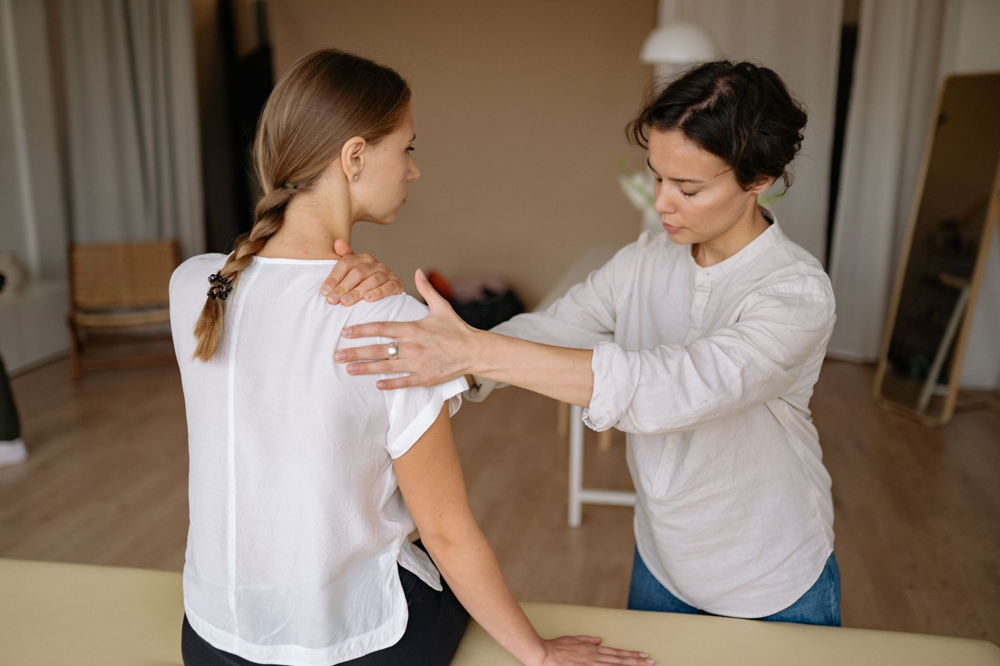

Orthopédie · Traumatologie
Rééducation orthopédique
Suites d'entorse, de fracture ou d'opération, arthrose, dos et nuque douloureux. On récupère la mobilité, puis la force, puis la confiance dans le mouvement.